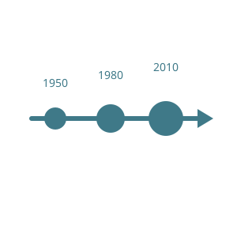

Los lenguajes de alto nivel fueron creados para facilitar el trabajo de los programadores y hacer que el código sea más sencillo de comprender. Utilizan palabras, símbolos y estructuras que se acercan al lenguaje humano, permitiendo escribir programas sin tener que conocer en profundidad el funcionamiento del hardware. Algunos ejemplos son Python, Java, JavaScript y C#. Gracias a estos lenguajes, desarrollar programas resulta más rápido, accesible y organizado.

Los lenguajes de bajo nivel tienen una relación mucho más cercana con el funcionamiento interno de la computadora. Permiten controlar de manera precisa diferentes recursos del hardware, como la memoria y el procesador. Aunque ofrecen un mayor control y pueden ser muy eficientes, suelen resultar más difíciles de aprender y utilizar. El lenguaje ensamblador es uno de los principales ejemplos y todavía puede utilizarse en determinadas aplicaciones donde se necesita trabajar directamente con el hardware.
El lenguaje máquina es el nivel más básico de los lenguajes utilizados por una computadora. Está formado por instrucciones representadas mediante números binarios, utilizando principalmente los valores 0 y 1. Estas instrucciones son interpretadas directamente por el procesador para realizar diferentes operaciones. Los programas escritos en lenguajes de mayor nivel necesitan ser transformados, mediante diferentes procesos, en instrucciones que finalmente puedan ser comprendidas y ejecutadas por el hardware.